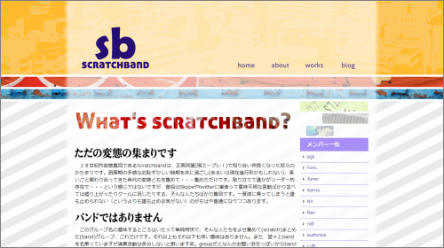

皆様突然のご連絡大変失礼いたしました。てーきとーです、お久しぶりな方はお久しぶりです。なるべく手短に説明をしたいと思うのですが、なかなか面倒くさい集まりについて説明せねばなりませんので、何卒最後まで読んでいただければと思います。いくらか時間をとらせてしまいますが、よろしくお願いします。
このたびscratchband(スクラッチバンド)なるグループを立ち上げることになりまして、皆様には是非メンバーとして加入していただきたいと思っています。つまるところがこういうことなのですが、いくつか順を追って説明しようと思います。

なぜscratchbandを立ち上げるのか？
簡潔に上げますと、正男同盟のメンバーでもう一度集まりたい、ということが、この集まりを立ち上げることになったキッカケとなります。
少し具体的につらつらと加えますと、我々が多感なお年頃を過ごしてしまった正男同盟では多くの仲間に出会うことができまして、大変刺激を受けたり、あるいは与えたりなどして、ある意味で充実した時間を過ごすことができたのではないかと思います。当然いくらかの黒歴史めいたものがあることも確かなのですが。あるいはそれが進行中なのかもわかりませんが。
その正男同盟はミープレ！へと変わり、それまでとは違う層のユーザーも集まるようになったわけですが、一方ではいささか世代が変わったような感じもあり、我々からみると現在のミープレ！の雰囲気は今までとは少し違うように感じられるのではないかと思います。
我々はSkypeチャットやtwitterなどでわーわーと騒いで未だに関わり合っているのですが、どうも今更この集まりを「正男同盟の」とか「ミープレ！の」とか言うには難しい。そこでひとつ新しいグループとして立ち上げてしまおう、という風にして思い立ったわけです。
さらにせっかくですので、現在あまり関わり合ってはいなくとも、正男同盟やミープレ！などでよく関わっていた人にも今回は連絡をとってみました。やはり正男を通して知り合った人達なので、そんじょそこらよりもクリエイティブな人が集まっていると思うのです。いわゆるヘンタイ共なわけですが笑、そういった人達も再び巻き込んで関わり合っていきたいと思うのです。
それからこのscratchbandという名前なのですが、意味するところは単純明快でして、そういった人達を寄せ集めて(scratch)、作った集まり(band)ということです。バンドなんて名前をつけてしまったのですが、みんなで演奏活動をやるというわけではありませんのでご了承ください。ただグループよりバンドの方がそれっぽいかな？となんとなく思っただけです・・・。
scratchbandは何をするのか？
主に何もしません。メンバーはただ「scratchbandに所属しています」と名乗るだけです。当初はメンバー共同で何かしらの作品などを発表する場にでもしようかとも思っていたのですが、なにせそれぞれ状況が違いますし、それをすることでこの集まりに余計に時間を割くというのもなかなか妙な話に感じるので、こういう風なカタチを取ることにしようと思っています。
そうはいっても、将来的には懇親会めいたものも開いて、一緒に食事を楽しんだり馬鹿騒ぎをしたり・・・というようなお楽しみ会のようなものもやりたいなぁとも考えています。仲良し集団って感じですね。それからもちろん本当に演奏活動なんてやってみても面白いかもしれませんし。
・・・というのがこちらでの簡単な妄想ですが、特になにか決まっているわけではないので、メンバーの中で色々と考えていきながら、各メンバーは今まで通りの活動をする、といった具合を当面はとるようになります。
参加希望について
以上がこの集まりの説明です。本当に大したことのない集まりなのですが、このscratchbandに参加を希望するかどうかを皆さんに答えていただきたいと思います。参加する・しない、のいずれも連絡をお願いします。
参加を希望する人には加えて、サイトに掲載する簡単なメンバープロフィールを併せて送っていただければと思います。HN、70～80字以内の自己紹介文、Twitterのアカウント名(持っている人のみ)、サイトorブログのURLとタイトル、それから、96x96以内のアイコンを用意して頂ければと思います。以下のように掲載されます。

送っていただく方法は、てーきとーに連絡がつくならどういった手段でも構わないのですが、主にtwitterのDMかメール( su.tekitou[at]gmail.com )で送っていただけると確実に受け取れると思います。急で申し訳ないのですが、希望は4月3日(土)までに送ってくださるようよろしくお願いします。何か質問等ありましたら同じくtwitterなどで気軽に聞いてください。
また、twitterのscratchbandのアカウント(@scratchband)からも更新情報などを随時発信しているので、フォローして頂ければと思います。
それでは、ご返答お待ちしています。